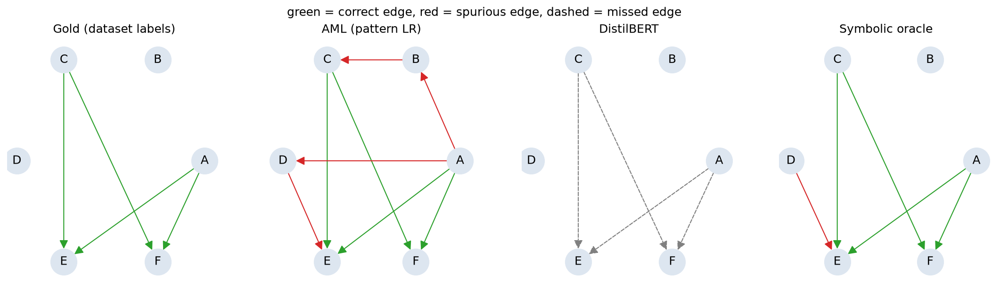
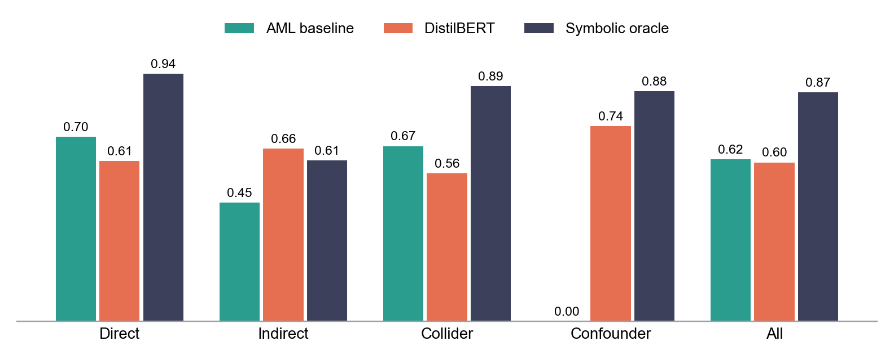
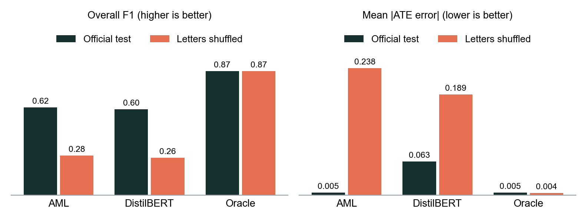
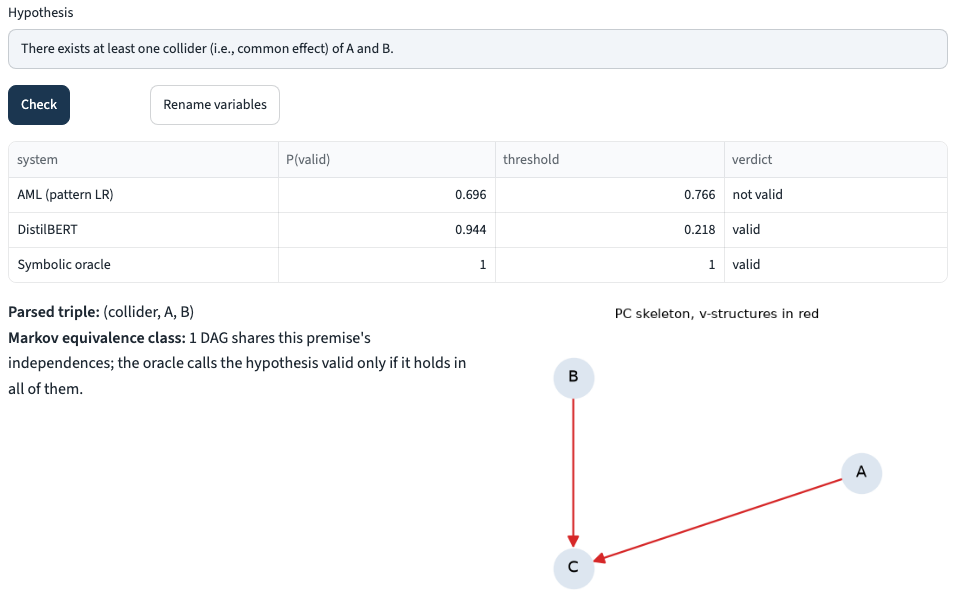
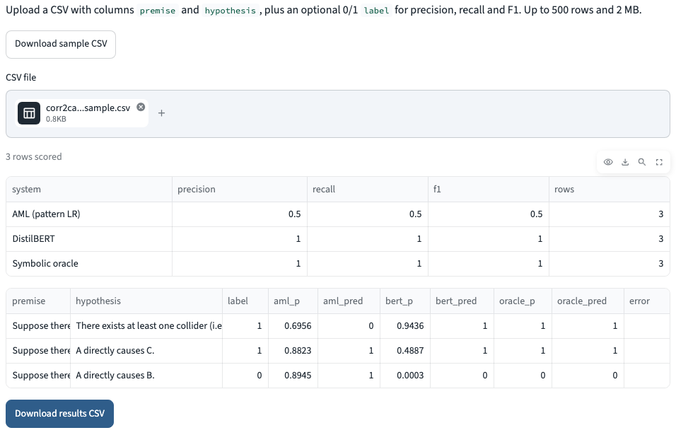
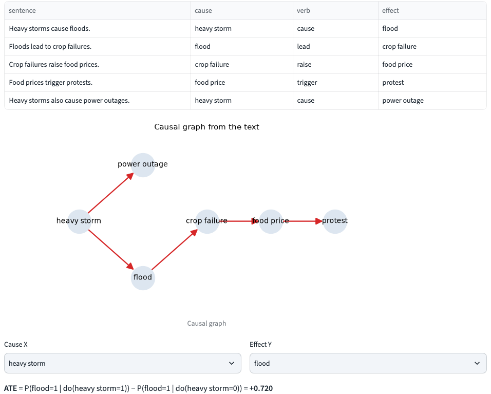

Abstract
We turn causal claims written in text into a graph, and then into a Bayesian network that can answer "what happens if we change X?" questions. Three systems decide which cause-effect claims the text supports: an AML baseline (six hand-made features and logistic regression), a fine-tuned DistilBERT model, and a symbolic oracle that runs the PC algorithm on the independence facts in the text. On the Corr2Cause test set (1,162 rows) AML scores an F1 of 0.617, DistilBERT 0.605 and the oracle 0.871. If we only shuffle the variable letters, which changes none of the causal facts, both learned models drop to about 0.27 while the oracle stays at 0.871. The same gap shows up in the graphs (edge F1 0.703, 0.610 and 0.942) and in the intervention queries, where the mean ATE error of the learned models rises from 0.005 and 0.063 to 0.238 and 0.189. We also found four problems in the dataset itself, including split leakage and 44 test labels that contradict their own premise. Finally, the pipeline runs as a public web app with the same models and thresholds, and a free-text extractor carries it from Corr2Cause premises to plain English sentences (Section 5).
1. Introduction
The project brief asks for a system that pulls cause-effect relations out of text and then tests them in a Bayesian network, keeping two jobs apart: reading the text, and reasoning about causes. A text model can suggest plausible relations, but on its own it cannot guarantee a graph without cycles, measure how strong an effect is, or answer intervention questions. A graph and a Bayesian network can do all three, as long as the relations going in are right. So we asked two things: how well do an AML model and a transformer pick out causal relations, and how much do their mistakes matter once those relations become a graph?
We used Corr2Cause [3], the dataset suggested in the brief. Each row has a premise (which variables are correlated and which are independent) and a hypothesis about two of them. The label is 1 when the hypothesis is true in every causal graph that fits the premise. Because the premise fully decides the answer, there is an exact symbolic solution, so we can see exactly what the learned models miss. What we built:
- A pipeline from text to triples, graphs, Bayesian networks and do-queries, with 25 unit tests and one notebook that reproduces every number in this report.
- A fair comparison of three systems on the same rows, with thresholds tuned on validation only.
- A shortcut test that shuffles variable names, and a check of four problems in the data.
- A public web app at corr2cause-dl-aml.streamlit.app that runs the three systems on any Corr2Cause-style input or a CSV file, and turns free English text into a causal graph that answers do-queries (Section 5).
2. Data
2.1 Corr2Cause
An example in the dataset's format, with three variables:
Premise: Suppose there is a closed system of 3 variables, A, B and C. A correlates with C. B correlates with C. However, A is independent of B.
Hypothesis: A directly causes C.
Label: 1 (valid). A and B are independent but both correlate with C, so C must be a common effect, A → C ← B, in every graph that fits the premise.
The six hypothesis templates fall into four relation types: direct ("X directly causes Y"), indirect (X causes Y through another variable), collider (X and Y share a common effect) and confounder (X and Y share a common cause). Table 1 gives the split sizes. Both learned models train on the same fixed sample of 30,000 training rows (seed 0), which keeps DistilBERT's training to about 1.5 hours.
| Split | Rows | Premises | Positive rate | Variables per premise |
|---|---|---|---|---|
| Train (full) | 205,626 | 2,336 | 18.5% | 4 to 6 |
| Train (used) | 30,000 | sample of the above | ||
| Validation | 1,026 | 19 | 12.6% | 2 to 6 |
| Test | 1,162 | 21 | 15.5% | 2 to 6 |
Table 1. Corr2Cause splits after removing premises shared with test.
2.2 Problems we found first
- Split leakage. All hypotheses about one premise belong in one split, but 3 validation premises and 2 training premises also appear in test. We left test alone and removed them from validation and train.
- A letter-order shortcut. "B directly causes A" is never true in training (0.0%), while "A directly causes B" is true 35.5% of the time, because the generator always names causes first in alphabetical order. To catch models that learn this, we made a second test set with the letters shuffled at random inside each premise (fixed seed per premise). The causal facts do not change, so a model that really reasons should score the same.
- Truncation. 37.7% of training pairs are longer than DistilBERT's 512-token limit. We cut the premise, never the hypothesis.
- Label errors. The oracle disagrees with 44 of the 1,162 test labels (3.8%), in 12 of the 21 test premises (Section 4.5).
3. Method
Strict regular-expression parsers turn each premise into its variables and independence facts, and each hypothesis into a triple (relation, X, Y). If a sentence does not match, the parser raises an error instead of guessing. Three systems then give every triple a probability of being valid.
3.1 AML baseline
Six features come from the parsed premise: whether X and Y are adjacent (no set makes them independent), whether they are correlated on their own, how many sets separate them, how many neighbours they share, how many variables there are, and whether X comes before Y in the alphabet. We kept the last one on purpose so the shuffled test could expose it. Each feature is crossed with the relation type, so one class-balanced logistic regression (scikit-learn) learns a separate rule for each relation.
3.2 DistilBERT
DistilBERT [6] is a smaller version of BERT [2]. We fine-tuned distilbert-base-uncased to classify (premise, hypothesis) pairs with Hugging Face Transformers [8]: 2 epochs, learning rate 5e-5, weight decay 0.01, batch size 16, maximum length 512, seed 42, keeping the epoch with the best validation F1. Training takes about 1.5 hours on an Apple M3 Pro and restarts from the last checkpoint if it is stopped.
3.3 Symbolic oracle
The premise lists every independence, so the PC algorithm [7] can run exactly. We first connect every pair of variables that no set separates. Then, wherever X and Y are not connected but share a neighbour Z that is not in their separating set, we orient X → Z ← Y (a v-structure). Finally we list every way to orient the remaining edges that has no cycle and keeps exactly these v-structures. That list is the Markov equivalence class [9]; with at most 15 edges, brute force is fast enough. A hypothesis is valid when it holds in every graph in the class. The oracle has nothing to train.
3.4 From triples to graphs
Each system gets one threshold, picked for the best F1 on validation and never changed on test. "Direct" triples above the threshold become edges. The review rules then drop self loops, keep only the more confident direction when both appear, and remove the weakest edge of any cycle, so every result is a DAG. Each edge keeps its probability and the row it came from. Figure 1 shows the graphs for one test premise.

3.5 Bayesian network and do-queries
Corr2Cause has no data to fit a network on, so we simulate it. For five test premises (the first five with at least three gold edges, a fixed rule) we build a gold network [4] on the gold DAG with binary variables and noisy-OR tables (leak 0.1, strength 0.8 per parent, uniform roots). We use noisy-OR because pgmpy's random tables give effects close to zero, which would make every answer look right. We draw 5,000 rows, fit each system's DAG on the same rows with pgmpy [1] (maximum likelihood), and compute the average treatment effect ATE = P(Y=1 | do(X=1)) − P(Y=1 | do(X=0)) [5]. We ask this for every pair joined by a directed path in the gold graph, in both directions. The forward direction has a real effect; the backward one should be zero, which catches reversed edges. That gives 76 queries per test set.
3.6 Evaluation
We report positive-class precision, recall and F1 for triples, edge precision, recall and F1 for graphs, and mean |ATE error| for queries, all on both the official and the shuffled test set. Library versions and seeds are fixed, and the notebook rebuilds every table and figure. The 25 unit tests cover the parsers, the splits, the oracle on hand-checked premises, the review rules (including cycle breaking) and the Bayesian-network queries.
4. Results
4.1 Relation extraction
| System | Precision | Recall | F1 | F1, letters shuffled |
|---|---|---|---|---|
| AML baseline | 0.596 | 0.639 | 0.617 | 0.279 |
| DistilBERT | 0.479 | 0.822 | 0.605 | 0.264 |
| Symbolic oracle | 0.920 | 0.828 | 0.871 | 0.871 |
Table 2. Triple extraction on the 1,162 test rows (positive class).
The two learned models are close overall but make different mistakes (Figure 2). DistilBERT is much better on confounders (0.743 vs 0.000; AML never gets one right) and on indirect causes (0.657 vs 0.452). AML is better on direct edges (0.703 vs 0.610) and colliders (0.667 vs 0.564), where its adjacency and separating-set features almost give the answer away. DistilBERT finds more true relations but also more false ones (recall 0.822, precision 0.479). The oracle is weakest on indirect causes (F1 0.612, recall 0.455) because of how the labels define that relation (Section 4.5).

4.2 The shuffle test
Shuffling the letters cuts both learned models by more than half (Figure 3): AML goes from 0.617 to 0.279 and DistilBERT from 0.605 to 0.264, while the oracle stays at 0.871. For AML this is expected, since letter order is the only feature that shuffling changes. DistilBERT loses the same cue and also sees premises listed out of alphabetical order, which never happens in training; its indirect-cause F1 falls to 0.038. A shuffled set re-sorted into alphabetical order would separate these two effects.

4.3 Graphs
| Set | System | Edge precision | Edge recall | Edge F1 | TP / FP / FN |
|---|---|---|---|---|---|
| Test | AML baseline | 0.542 | 1.000 | 0.703 | 65 / 55 / 0 |
| Test | DistilBERT | 0.505 | 0.769 | 0.610 | 50 / 49 / 15 |
| Test | Symbolic oracle | 0.890 | 1.000 | 0.942 | 65 / 8 / 0 |
| Shuffled | AML baseline | 0.200 | 0.369 | 0.259 | 24 / 96 / 41 |
| Shuffled | DistilBERT | 0.161 | 0.138 | 0.149 | 9 / 47 / 56 |
| Shuffled | Symbolic oracle | 0.890 | 1.000 | 0.942 | 65 / 8 / 0 |
Table 3. Edge scores of the per-premise DAGs against the gold direct edges.
The oracle's graphs reach edge F1 0.942 on both test sets. On the official test set AML finds every true edge but adds almost as many wrong ones. DistilBERT tends to get a premise all right or all wrong: it finds every true edge in 9 of the 13 premises that have gold edges and none in 2, like the premise in Figure 1. The review rules removed nothing here. All 395 edges from the text models point from an earlier letter to a later one, edges that follow one order can never form a cycle, and the oracle's edges all come from valid DAGs. The cycle-breaking rule is still checked by the unit tests.
4.4 Intervention queries
| Set | Gold structure refitted | AML baseline | DistilBERT | Symbolic oracle |
|---|---|---|---|---|
| Test | 0.004 | 0.005 | 0.063 | 0.005 |
| Shuffled | 0.005 | 0.238 | 0.189 | 0.004 |
Table 4. Mean |ATE error| over 76 queries per set on five premises.
On the official test set AML matches the oracle (0.005) despite 55 wrong edges, while DistilBERT, with fewer wrong edges but 15 missing ones, is more than ten times worse (0.063). Extra edges cost little because the fitted network learns they carry no effect; missing or reversed edges remove or flip real effects. After shuffling, both learned models miss and reverse many edges and their errors jump to 0.238 and 0.189. The oracle stays at the floor set by finite data, which refitting the gold structure puts at 0.004 to 0.005.
4.5 Label audit and edge review
Of the 44 test rows where the oracle and the label disagree, 31 are labelled valid where the oracle says no, and 13 the other way round. We traced the first ten back to the premise. Five labels contradict every graph that fits the premise. In one case the premise says A and B are independent, also given C or given D, but never given E. That makes E a collider, so A → E holds in every fitting graph, yet "A directly causes E" is labelled invalid. The other five follow a looser meaning of the relation. For indirect causes, reading the label as "a directed path of length two or more" matches 385 of 388 test rows (99.2%), against 369 (95.1%) for our stricter reading. Validation favours the looser reading by only one row (333 vs 332 of 337), so we kept the definition we chose before looking at test.
We also checked the 38 edges the text models proposed for three premises against the premise statement that decides each one. AML has 15 supported and 6 unsupported, and all 6 link connected variables whose direction the premise leaves open. DistilBERT has 10 supported and 7 unsupported, and 5 of those 7 link variables the premise says are independent. These checks use the same reasoning as the oracle, so they explain its verdicts rather than give an independent second opinion.
5. The live application
The whole pipeline is also a public web app at https://corr2cause-dl-aml.streamlit.app, hosted on Streamlit Community Cloud. Anyone can check a causal claim with the three systems side by side, score a CSV file of claims, or type plain English and ask an intervention question, with nothing to install. The app serves the models from this report unchanged, so its scores are the scores in Section 4.
5.1 Architecture
A thin Streamlit interface sits on c2c/demo.py, which imports no UI code, uses the notebook's strict parsers and modules, and is tested directly (Table 5). The fine-tuned DistilBERT and its tokenizer, the fitted AML pipeline and the two thresholds live in the Hugging Face Hub model repository abhijeetnst/distilbert-c2c; the app downloads them on first start and shares one copy among all visitors. The thresholds are the notebook's validation-tuned values, not retuned: 0.7659 for AML and 0.2176 for DistilBERT. Community Cloud has no GPU, so DistilBERT runs on CPU-only PyTorch, 32 pairs per forward pass.
| Part | Where | What it does |
|---|---|---|
| Interface | demo/streamlit_app.py | Three tabs, inputs, result tables and graph images; readable messages for bad input |
| App logic | c2c/demo.py | Parsing and limits, the three systems, batch scoring and metrics, free text → DAG → ATE |
| Free-text extractor | c2c/text.py | spaCy dependency parse → (cause, verb, effect) triples → reviewed DAG |
| Models | Hub: abhijeetnst/distilbert-c2c | DistilBERT weights and tokenizer, aml.joblib, thresholds.json |
| Hosting | Streamlit Community Cloud | Builds from the GitHub main branch with Python 3.12 and demo/requirements.txt |
| Checks | GitHub Actions | Test suite on every push and pull request; keep-alive visit every 6 hours |
Table 5. Parts of the live application.
5.2 The three tabs
Corr2Cause check. The user picks one of six real test-set rows or types a premise and hypothesis in the Corr2Cause template. AML, DistilBERT and the oracle each give P(valid), their threshold and a verdict; the app also reports the parsed triple and the size of the Markov equivalence class, and draws the PC pattern with its v-structures (Figure 4). A Rename variables button shuffles the letters with the same function that built the shuffled test set (Section 2.2), so a visitor can watch the text models' scores move while the oracle's verdict stays put.
Batch CSV scoring. The user uploads a CSV file with premise and hypothesis columns and an optional 0/1 label; a sample file can be downloaded from the tab. Every row is scored by all three systems, and a row that does not parse gets a message in an error column instead of stopping the run. With labels, the tab shows precision, recall and F1 per system. The results download as CSV (Figure 5).
Free text. The user types English sentences. The app lists the (cause, verb, effect) triples it found with the sentence each came from, draws the DAG with causes on the left, and, for any chosen X and Y, puts a noisy-OR network on that DAG (the parameters of Section 3.5) and reports ATE = P(Y=1 | do(X=1)) − P(Y=1 | do(X=0)) (Figure 6).


5.3 Free-text extraction
The brief suggests open text as an extension, and ordinary prose needs a real parser rather than our template regular expressions. c2c/text.py takes the dependency-pattern route: spaCy's en_core_web_sm model parses each sentence, and a fixed list of causal verbs (cause, lead, result, increase, reduce, raise, lower, trigger, produce, induce, prevent, drive) anchors the pattern. In the active voice the subject is the cause and the direct object, or the object of "to" or "in" for "leads to" and "results in", is the effect; in the passive ("Y is caused by X") the agent is the cause. The triples then pass the same review rules as the graph stage in Section 3.4:
- Alias normalisation: a node is its noun phrase without determiners, lowercased and lemmatised, so "the storms" and "storm" become one node.
- Provenance: every edge keeps its sentence, sentence number and row id.
- No self loops: a triple whose cause and effect normalise to the same name is dropped.
- One direction per pair: if both directions appear, the earlier sentence wins.
- Cycle breaking: while a cycle remains, it loses the edge that came from the latest sentence.
The result is always a DAG, so the Bayesian-network code from Section 3.5 runs on it unchanged.

5.4 Engineering
- Continuous integration: GitHub Actions installs the pinned environment and runs the test suite on every push and pull request. The suite has grown from the 25 pipeline tests of Section 3.6 to 43: 4 for the extractor and 14 for the app, including runs of the Streamlit script in Streamlit's test harness.
- Keep-alive: Community Cloud puts an idle app to sleep. A scheduled workflow opens the app in a headless browser every 6 hours, wakes it if needed, and fails unless the app's title appears.
- Input limits: premises up to 6,000 characters and 6 variables (the oracle brute-forces the equivalence class); free text up to 5,000 characters and 50 causal statements; batch files up to 500 rows and 2 MB.
- Privacy and errors: inputs are processed in memory and are not stored or logged. Bad input gets a readable message; other errors are logged with their type and traceback only. Usage statistics are off.
5.5 Verification
We scored 20 random test rows (seed 0) with the app's code and compared them with the notebook's results/predictions.csv. All three systems agree within 0.0005 on every row (the largest gap is 0.00005, from rounding), so the app reproduces the numbers in this report. The live app returns the same scores: on test row test-39 it gives AML 0.696, DistilBERT 0.944 and oracle valid (Figure 4), matching the notebook's 0.6956, 0.9436 and 1.
5.6 Limitations of the app
- The Corr2Cause tab accepts only the dataset's template language, with at most 6 variables.
- The free tier runs on a shared CPU and sleeps when idle, so the first visit after a sleep waits for a restart. GitHub pauses scheduled workflows after 60 days without repository activity, which stops the keep-alive.
- The extractor is pattern-based and English only. Verbs outside the list are ignored, each verb yields one cause and one effect ("X and Y cause Z" keeps only the first noun of each side), and the small spaCy model misparses some sentences ("results in" can yield no triple).
- Noisy-OR assumes every edge raises its effect, so "reduces" and "prevents" are treated as positive causes, and the ATE reflects the graph structure, not real-world effect sizes.
6. Discussion and conclusion
Both learned models reach an F1 near 0.61, which looks like partial understanding, but most of it disappears when only the variable names change. They picked up cues that happen to match the labels in this dataset, such as letter order, instead of the rule that links independences to causal structure. The oracle uses that rule and ignores names.
The later stages show which mistakes matter. The graph stage always produces a DAG with a source for every edge, and the Bayesian network answers interventions consistently on any DAG it is given. It cannot add an edge that was never proposed, though: missing and reversed edges cause the ATE errors, while extra edges are mostly absorbed. A better hybrid would use the language model to read the text into symbols (variables and independence facts) and leave the causal reasoning to the graph algorithms.
7. Limitations and next steps
- 44 test labels are disputed, so no system can reach F1 1.0 on the official labels, and small gaps between systems should be read with care.
- 37.7% of training pairs are cut at 512 tokens. A longer-context encoder would see the whole premise.
- We used 30,000 of the 205,626 training rows and one seed. More data or more seeds could change the AML vs DistilBERT result on the official test set.
- The noisy-OR parameters are our choice, so the ATE error tests the graph structure, not real-world effect sizes.
- The free-text extractor (Section 5.3) is a first step to open text, not an evaluated system: we have not yet measured its precision and recall on hand-labelled sentences.
- Next we would build a shuffled test re-sorted into alphabetical order, train a model that outputs independence facts for the oracle, and run the free-text extractor on PubMed abstracts, the open-text extension suggested in the brief, scored against a labelled sample.
Team contributions
| Member | Contribution |
|---|---|
| Abhijeet | Project setup and codebase structure (package layout, pinned environment, test setup); data layer (loading, leakage-safe splits, parsers, letter shuffling); end-to-end notebook and results; live application (Streamlit app, batch scoring, free-text extraction), CI and deployment; presentation and report |
| Prashant Pandey | Symbolic oracle (PC algorithm, Markov equivalence class, entailment) and the label audit |
| Divyanshi Khanka | AML baseline; graph stage (review gate, DAG per premise, edge metrics) and the edge review |
| Shubham Jain | DistilBERT fine-tuning and inference, resumable training |
| Rahul Kumar | Bayesian networks and intervention queries (noisy-OR gold network, pgmpy fitting, ATE) |
References
[1] Ankan, A., & Panda, A. (2015). pgmpy: Probabilistic graphical models using Python. Proceedings of the 14th Python in Science Conference (SciPy).
[2] Devlin, J., Chang, M.-W., Lee, K., & Toutanova, K. (2019). BERT: Pre-training of deep bidirectional transformers for language understanding. NAACL-HLT.
[3] Jin, Z., Liu, J., Lyu, Z., Poff, S., Sachan, M., Mihalcea, R., Diab, M., & Schölkopf, B. (2024). Can large language models infer causation from correlation? ICLR.
[4] Pearl, J. (1988). Probabilistic Reasoning in Intelligent Systems. Morgan Kaufmann.
[5] Pearl, J. (2009). Causality: Models, Reasoning, and Inference (2nd ed.). Cambridge University Press.
[6] Sanh, V., Debut, L., Chaumond, J., & Wolf, T. (2019). DistilBERT, a distilled version of BERT: smaller, faster, cheaper and lighter. arXiv:1910.01108.
[7] Spirtes, P., Glymour, C., & Scheines, R. (2000). Causation, Prediction, and Search (2nd ed.). MIT Press.
[8] Wolf, T., et al. (2020). Transformers: State-of-the-art natural language processing. EMNLP: System Demonstrations.
[9] Verma, T., & Pearl, J. (1990). Equivalence and synthesis of causal models. Proceedings of the 6th Conference on Uncertainty in Artificial Intelligence (UAI).
Appendix: reproducing the results
Code layout: c2c/data.py (loading, splits, parsers, renaming), c2c/aml.py, c2c/bert.py, c2c/oracle.py, c2c/graph.py, c2c/bn.py, one test file per module in tests/, and project1_causal.ipynb, which runs every stage and writes results/*.csv and the DAG figure. The app of Section 5 adds c2c/text.py, c2c/demo.py and demo/streamlit_app.py. Steps:
- python3 -m venv .venv && source .venv/bin/activate && pip install -r requirements.txt
- pytest tests (25 tests for the pipeline, 43 with the app; 2 skip without the local model)
- python -m c2c.bert (about 1.5 hours on an Apple M3 Pro; resumes if interrupted)
- jupyter nbconvert --to notebook --execute --inplace project1_causal.ipynb
- streamlit run demo/streamlit_app.py (the app of Section 5, at localhost:8501)